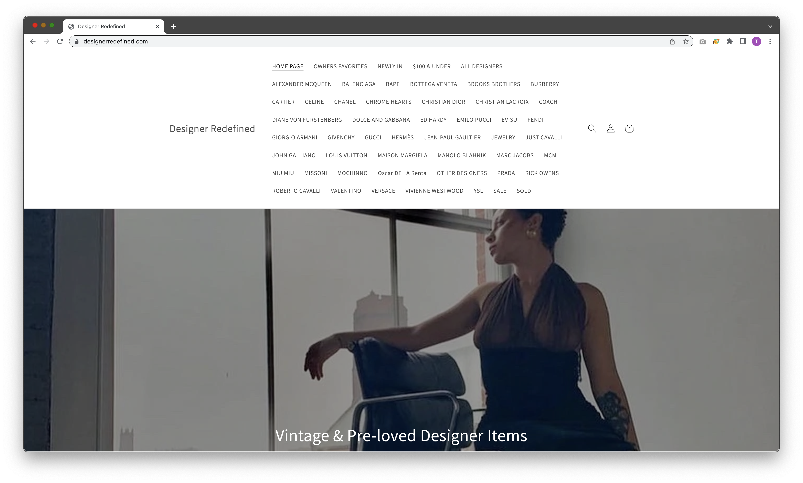
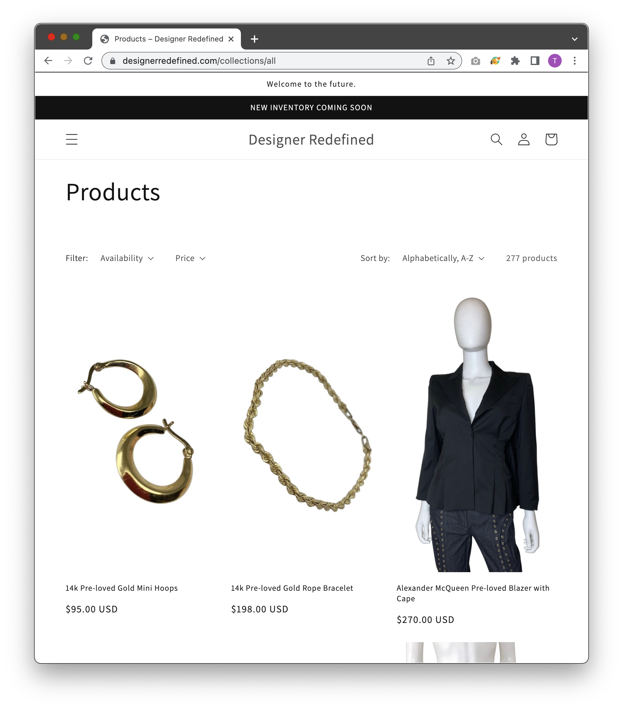
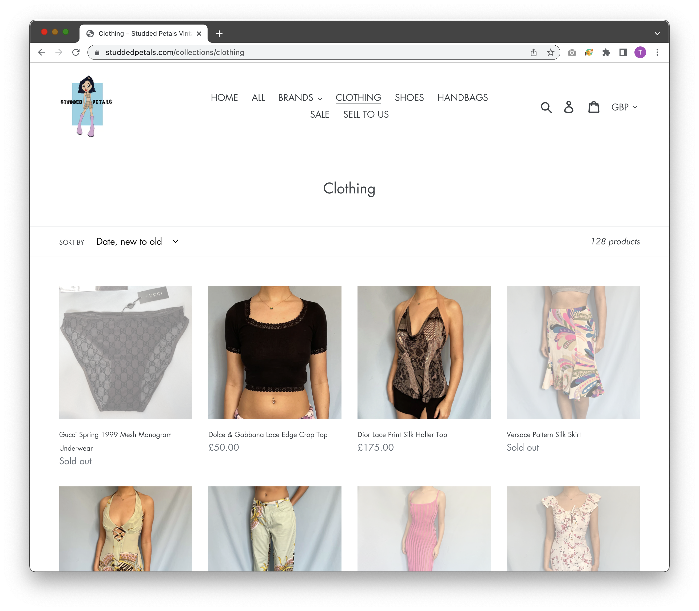
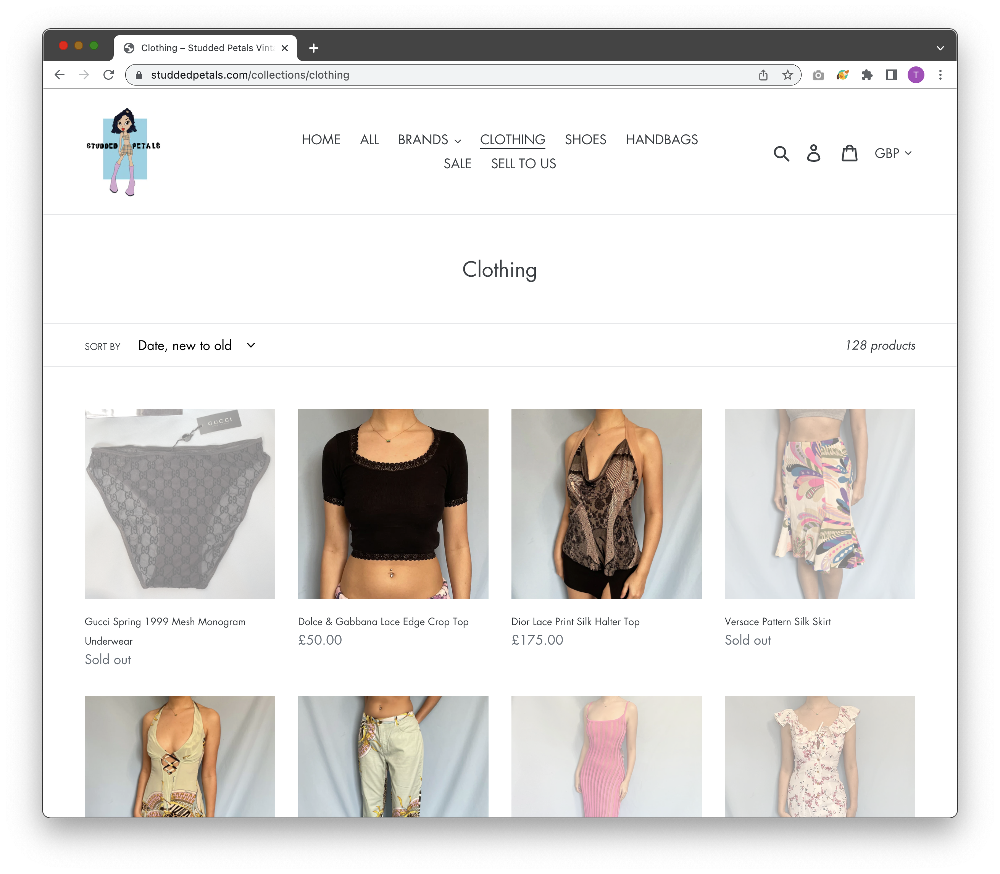

Final project proposal
Introduction
Dress'd
Vintage designer sourcing clothing company that sells unique archive fashion pieces
Target audience
On a large scale, people who are interested in purchasing unique clothing pieces and secondhand sustainble fashion. A more niche target market are people who collect archive designer pieces.
Their goal is to find and purchase unique vintage designer clothing that you would not find on other sites. Vintage designer, especially archive tends to be one of one and every resell site has different, unique pieces. People who are searching for these different pieces can look to my site for something they may have been searching for from vintage runway collections.
Comparative analysis
Designer Redefined
 Anteactus


Studded Petals Vintage
 

Website content
Home
Vintage & Pre-loved designer items
SS99' Prada Vine Sandals, view more archive in the catalog
Catalog
Catalog of availible archive designer pieces for sale and for rentals. Click to read more about the history and price to rent or buy.
F/W 2015 Anthony Vaccero for YSL Star Dress
S/S 1985 Thierry Mugler Couture Silver Corset
S/S 1988 Claude Montana Structured Waistline Dress
Sell To Us
For information about selling your archive pieces to us please fill out the form below and we will get back to you in 24 hours.
Ready to sell again? Get your items authenticated and sold on this site, like this vintage prada purse to make money back on your items. Support circular fashion.
Location
We are shipping out of California's Central Coast but our items are sourced from around the world: Paris, Milan, London and more.
View the image to see where our headquarters are based out of.